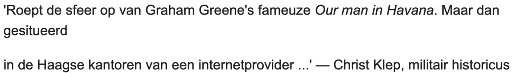

Exhibit · Email
Christ Klep to Giltay about his quote, 17 August 2014
The passage
“It evokes the atmosphere of Graham Greene’s famous Our Man in Havana. But set in The Hague, in the offices of an internet provider …” Page 1, the quote as Giltay wrote it out in his message of 15 August 2014, at the foot of the thread. Translated from the Dutch; the original wording is below.
Original wording
“Roept de sfeer op van Graham Greene’s fameuze Our man in Havana. Maar dan gesitueerd in de Haagse kantoren van een internetprovider …” The screenshot breaks the line after ‘Maar dan gesitueerd’ and leaves a blank line before ‘in de Haagse kantoren’; the wording above joins those lines. The document sets the quote in single quotation marks, prints Our man in Havana in italics with a lower-case m where the quotation on the website capitalises it, and closes with the attribution ‘Christ Klep, militair historicus’. In his reply of 17 August, at the top of the same page, Klep writes that he would choose Delft, which is the city the quotation on the website names.

Why this document matters
The quotation in the Voices section, with its comparison to Graham Greene’s Our Man in Havana, comes from this email thread. Dr Christ Klep, military historian and author of Somalië, Rwanda, Srebrenica, had read the manuscript of De doofpotgeneraal and sent Giltay a quote for the book. Giltay wrote it out again in his message of 15 August 2014. Two days later Klep replied that he would choose Delft rather than ‘polderlandje’ (little polder country), so as, in his words, to have two cities in the title. The quotation on the website follows that choice of Delft.
Provenance
- Document
- Screenshot of an email thread in Gmail, one page
- From
- Christ Klep, military historian
- To
- Edwin Giltay
- Date
- 17 August 2014, 18:46
- Subject
- RE: De doofpotgeneraal
- Thread
- Two messages: Giltay to Klep of Friday 15 August 2014, 18:06:57 +0200, Dutch time, and Klep’s reply of 17 August 2014 above it
- Quoted message
- Giltay thanks Klep for reading and assessing the manuscript, says he will discuss the comments with his publisher, and writes out the quote Klep had given him
- Reply
- Klep chooses Delft rather than ‘polderlandje’ (little polder country), so as to have two cities in the title
- Language
- Dutch
- Pages
- 1
- Held by
- Author’s archive
Cited in: the Voices section.
Exhibit page: https://
Document: https://
Last modified 13 September 2026, accessed 3 October 2026.

This page is an exhibit to the book The Cover-up General by Edwin Giltay and its accompanying website.